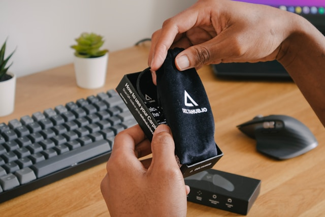

Marketing de Influência: Como Escolher os Influenciadores Certos
O marketing de influência tem se tornado uma das estratégias mais eficazes para marcas que buscam aumentar sua visibilidade e engajamento nas redes sociais. No entanto, escolher os influenciadores certos para representar sua marca é crucial para garantir que a mensagem ressoe com seu público-alvo. Neste artigo, vamos explorar como identificar e colaborar com influenciadores que se alinhem aos seus valores e objetivos de marketing.
1. Entenda o seu público-alvo
Antes de começar a procurar influenciadores, é essencial ter uma compreensão clara do seu público-alvo. Pergunte-se:
- Quem são os meus clientes ideais?
- Quais são seus interesses e comportamentos nas redes sociais?
- Quais influenciadores eles seguem e confiam?
Realizar pesquisas de mercado e criar personas pode ajudar a identificar quais influenciadores têm uma conexão genuína com seu público.
2. Identifique influenciadores relevantes
Procure influenciadores que se alinhem com sua marca e seus valores. Aqui estão algumas dicas para identificar influenciadores relevantes:
- Verifique a relevância do conteúdo: O conteúdo do influenciador deve estar relacionado ao seu nicho de mercado.
- Analise o engajamento: Influenciadores com altos níveis de engajamento (curtidas, comentários e compartilhamentos) costumam ter audiências mais ativas.
- Considere a autenticidade: Escolha influenciadores que são percebidos como autênticos e que têm uma conexão genuína com seus seguidores.
Ferramentas como BuzzSumo e Upfluence podem ajudar a descobrir influenciadores que se encaixam no seu perfil.
3. Avalie a qualidade do conteúdo
O conteúdo que um influenciador produz é um reflexo de sua marca. Avalie a qualidade do conteúdo que eles compartilham, prestando atenção a aspectos como:
- A estética visual das postagens
- A profundidade e relevância das informações compartilhadas
- O tom e a voz usados em suas comunicações
Certifique-se de que o estilo do influenciador esteja alinhado com a imagem da sua marca para garantir uma parceria coesa.
4. Estabeleça uma relação autêntica
Uma colaboração bem-sucedida vai além de uma simples transação. Busque estabelecer uma relação autêntica com os influenciadores. Isso pode incluir:
- Interagir com eles nas redes sociais antes de propor uma parceria.
- Compartilhar conteúdo que eles criam, mostrando apoio genuíno.
- Propor colaborações que ofereçam valor tanto para sua marca quanto para o influenciador.
Construir uma relação baseada na confiança e respeito mútuo pode resultar em parcerias mais eficazes e autênticas.
5. Meça os resultados da campanha
Depois de lançar sua campanha de marketing de influência, é essencial medir seu desempenho para entender o impacto e fazer ajustes conforme necessário. Algumas métricas a serem consideradas incluem:
- Taxa de engajamento (curtidas, comentários, compartilhamentos)
- Tráfego gerado para seu site
- Conversões (vendas, leads, inscrições)
Use ferramentas de análise como o Google Analytics e as análises das redes sociais para acompanhar o desempenho da campanha e aprender com os resultados.
Solicite seu Projeto de Marketing de Influência
Está pronto para impulsionar sua marca através do marketing de influência? Nossa equipe especializada pode ajudar a conectar sua marca com influenciadores que se alinhem aos seus valores e objetivos. Entre em contato conosco para uma consulta gratuita!
Pronto para potencializar sua marca com influenciadores?
Deixe-nos ajudá-lo a criar campanhas de marketing de influência eficazes. Solicite seu projeto de marketing de influência agora mesmo!
Solicitar Projeto